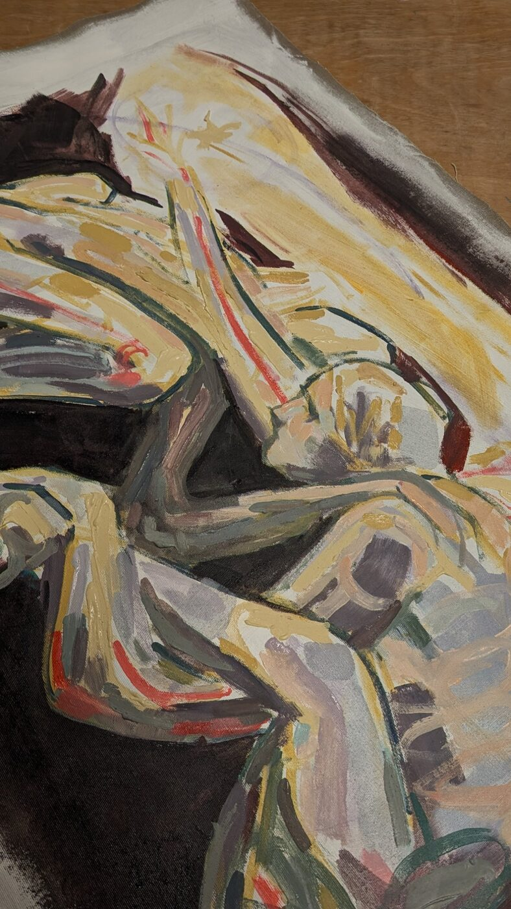
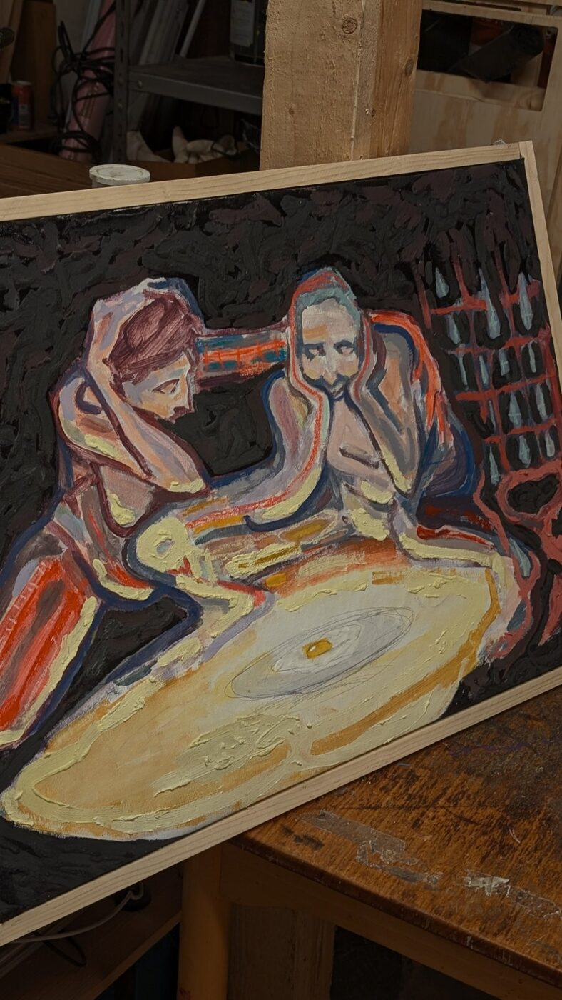
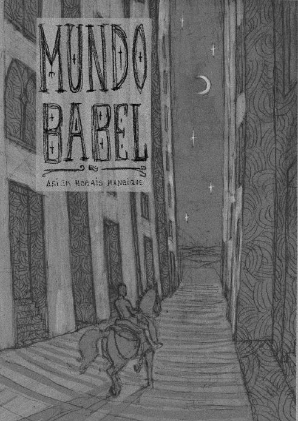
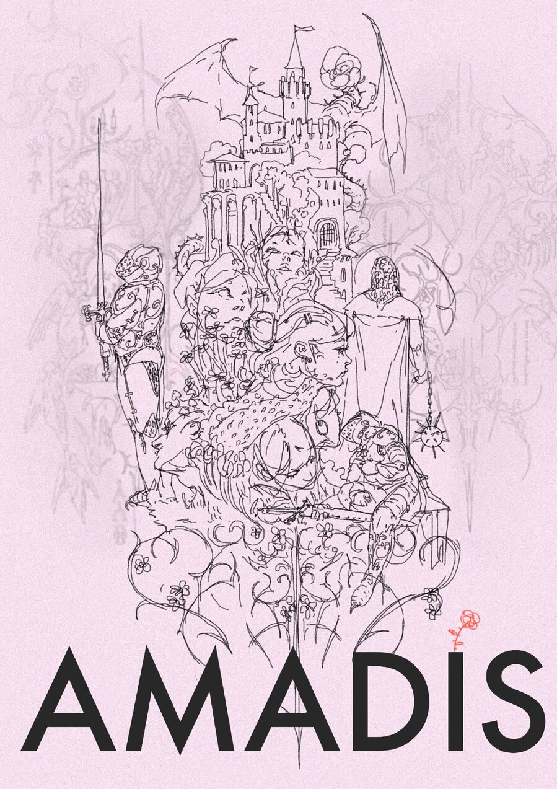
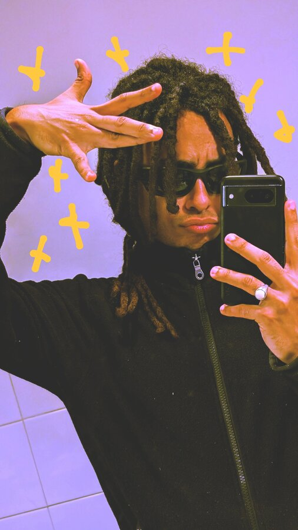
Im Asier, a sketch artist from Spain, based in Copenhagen. Big fan of drawing, painting, sculpting, making short stories and many other useless things.
FOR COLLABORATIONS OR IF YOU HAVE ANY QUESTIONS
asier.ux.ui@gmail.comThe other day I saw a seagull killing and eating a pigeon at the entry of my building. Thousands (probably hundreds) of feathers scattered across the parking, as if a pyjama rave party just took place. Since I’m quite biased by the small folk and mythology drawing series I’m working on at the moment, the myth of Icarus came to my mind immediately when I saw the crime scene, and I started tracing a scheme in my mind with the present subjects as the main protagonists of the tale, that would later lead me to a decent reimagination of the tale. A bountiful weekend.
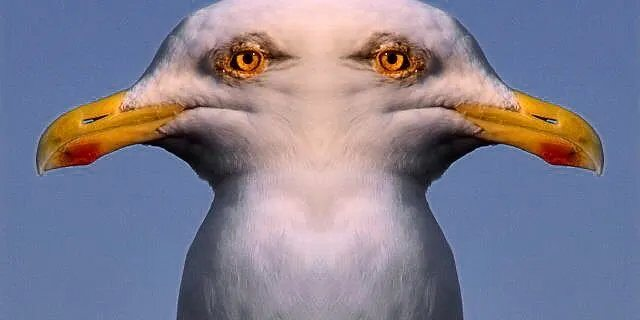
It was my assumption that the deceased pigeon (Icarus) probably came too close to a piece of succulent food found on the floor, and the seagull (Apollo, probably also interested in the food) understood this approach as a sign of vanity from this lesser being, hence punishing it with the death penalty. Other pigeons (Daedalus) were watching the savage scene, which (even although I completely despise all kinds of birds) felt a bit sad and made me wonder if they were friends or even relatives.
While riding my bike to the park to sit under the sun in a performative drawing session, I started thinking about the myth. It feels like a missed opportunity from ancient Greeks that the end of the story is just Icarus falling into the sea, never to be seen again. Not much drama in that compared with the fates of other pals like Medusa, Tantalus or Sisyphus — no punishment for his boldness, no eternal torment, no sass from the gods… just *splash*
Justice had to be made…
So, 3,000 years after the story was first told, I, just as Icarus did, just as the deceased pigeon did, wielded my vanity and embarked on an ego trip to try to come up with a much, much better ending that no one asked for nor thought was missing, just to put a cherry on top of this immortal tale that didn’t miss any cherry at all.
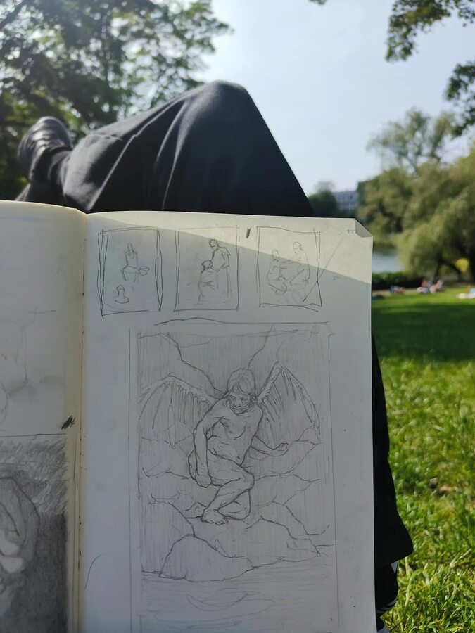
Instead of plunging into the ocean and vanishing, Ícaro slips through a narrow gap in the rocks and crashes into a hidden pit. With all his bones broken, there he lies, forever, aging and without any chance of escaping, eating mussels and algae, drinking rain drops from the stalagmites, with the reflection of the sun shining on the surface of the dark waters as his only company, reminding him of his hubris. The End.
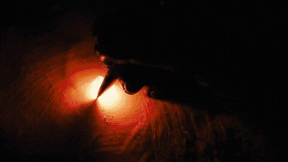
This drawing was conceived as a counterpoint to Herbert James Draper’s depiction of Icarus in his painting: The Lament for Icarus. A warm color palette with lots of bronze tones was selected, giving everything a sunlit appearance, almost like a tribute from Apollo to mourn the poor fool. The horizon is distant, and the composition has a depth that lends it life. Icarus stands as a formidable figure; despite falling an unknown height, he retains all his feathers and a strong physique, with a broad chest and a magnificent posture, surrounded by a gathering of Nereids mourning him. He lived as a human, defied the gods, and yet his defiance is met with divinity and adoration here, portraying Icarus as a god rather than just a drooling pulp of meat, bones and feathers. He is not dead, he is just sleeping.
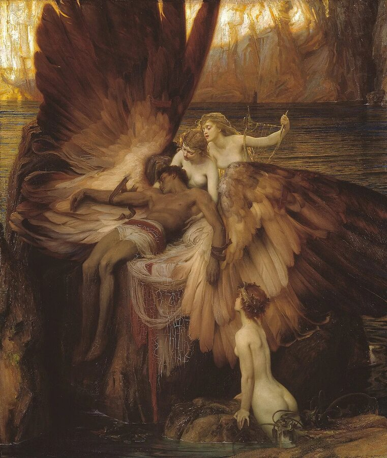
In my drawing, none of that is present (even although it is black and white, I want you to envision a dark teal green atmosphere) enveloped and immersed in shadows, with no horizon and no group of nereids, just a sharp rock wall in the background, leaving no escape. Alone, unworshipped. The wings have a scant amount of feathers, resembling a seagull engulfed in the swell of an oil-slicked wave, with a decrepit, old, and saggy body, a pitiable posture that conveys humiliation instead of tragedy, a mere echo of his former glory. He challenged the gods and they buried him alive with no other way out than drowning himself in the reflection of the sun, Apollo’s final mockery of a boy who once reached for his crown.
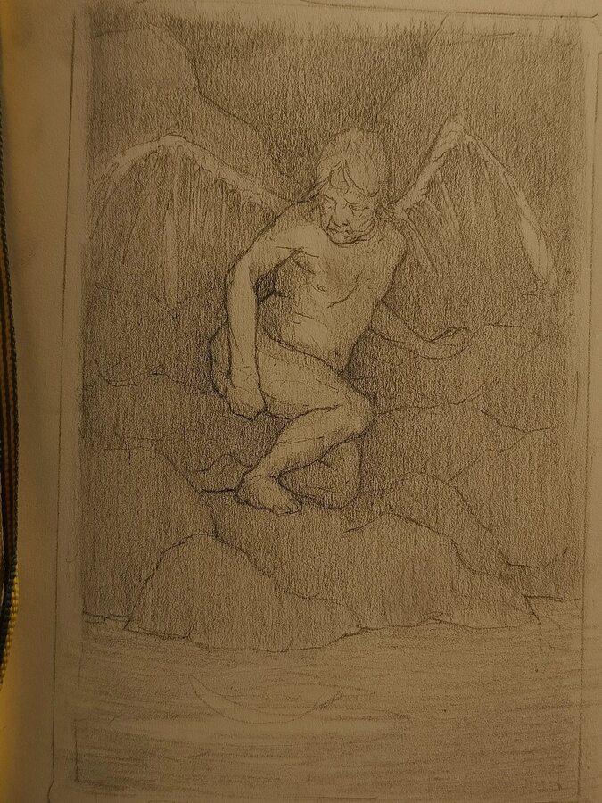
The drawing is so disproportionate (I don’t know why I keep drawing lying down and without my glasses) the wings look just like plastic combs and the rocks like very small mountains, it would have been wise to check some references for that, the dude also kind of looks as if he was placing an enema somewhere, and he looks too well-fed for someone who is sustained only by seafood. I didn’t put much thought into it, but it’s meant to be sold in a flea market for a low price, so I suppose it’s more than sufficient for someone’s grandma’s night table.
An old woman gave this frame to me for free after bargaining with her at a store next to my house (Remember, when bargaining, try to always wear clothes with holes and oil stains in trinket stores to set proper expectations with the seller) the golden border kinda symbolizes everything I tried to antagonize, but I think it’s more than enough for the “Icarus — mobbed pigeon” mental fart I just had.
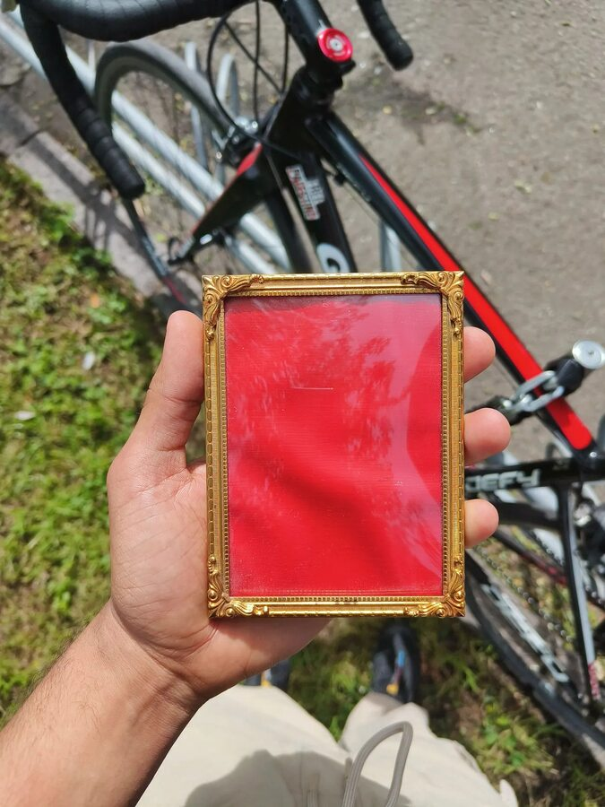
I was waiting for the traffic light to turn green when I saw this poster on the bus stop shelter, a new animated movie by Pixar, Elio. I hadn't heard of it before, which is strange considering these types of films usually have gargantuan marketing budgets. I took a photo so I wouldn't forget to look it up later and continued on with my dominical stroll, these glutes don't get worked out by staring at posters on the street.
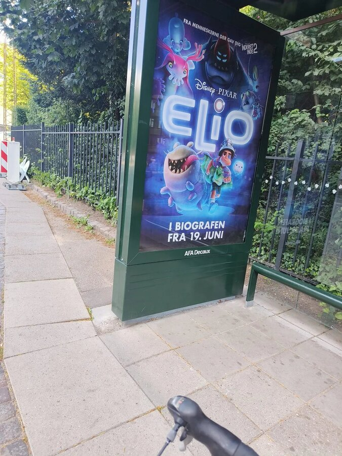
(It's always so embarrassing to take pictures in public of things as common and dull as a poster of a kids' movie at a bus stop, I could really feel on the back of my neck the eyes of the other cyclist, dreaming about seizing me because of how lame I looked)
Turns out the movie was released this week, and apparently it's been a total box office disaster, according to some sources, the worst opening weekend for any Pixar release.
“Boring,” “simple,” “unoriginal,” “I've seen this before.”
I could see it coming, the poster reminded me of a yogurt commercial for kids that used to air in Spain a few years ago. And there's nothing more boring, simple, unoriginal, and overdone than plain yogurt.
(Side note for the designers: If this ended up being one of those projects where creative direction was hijacked by marketing execs and brand strategists, I see you. Not all dull posters are your fault, sometimes plain yogurt comes from the top.)
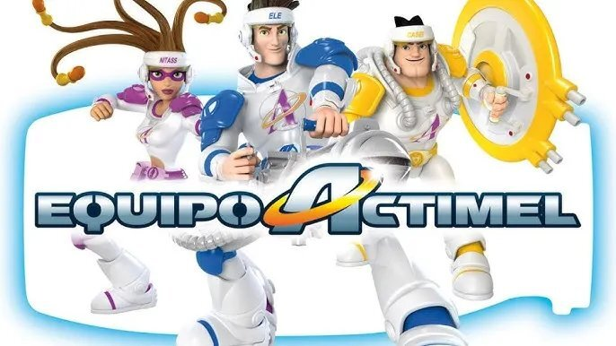
After going through some reviews, I finally stumbled upon a niche audience that actually enjoyed the film. They gave Elio a whopping 85 out of 100. Superior in every aspect to Poor Things by Yorgos Lanthimos, which only managed a measly 49 out of 100. The name of the website? Worth It or Woke.
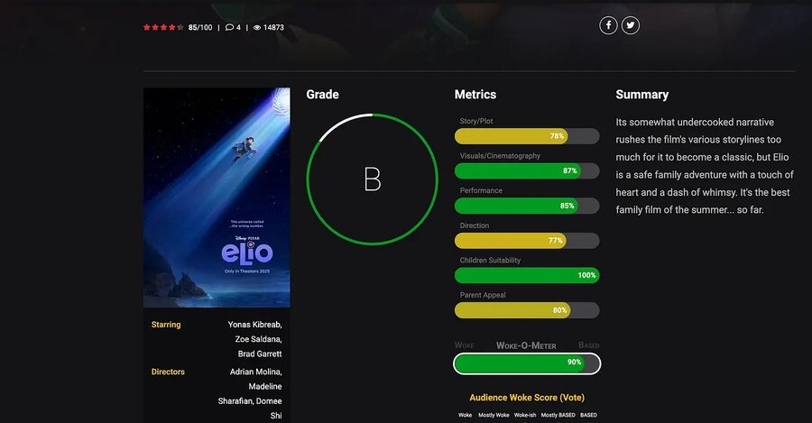
It's a site that publishes reviews mainly analyzing whether the ideological line of the film aligns with what these people consider morally correct. I believe the image they use as a mascot gives you a clear idea of who they deem morally incorrect.
It's interesting to see how what is the worst Pixar movie in years, by most accounts, delights all those prudes who are content with protagonists who aren't women, queer, or any kind of minority. They're satisfied with their biannual dose of Mission: Impossible or Fast and Furious, films they probably enjoy while munching on a tub of utterly meaningless plain yogurt.
After mulling it over, I headed to the bodega to work on my series of folkloric drawings and reclaim, in the form of a beer (3 in fact), all the calories I had so recklessly burned on that stupid bike ride.
While thinking about Elio and its legion of yogurt-in-the-veins fans, the figure of Heliogabalus came to mind.
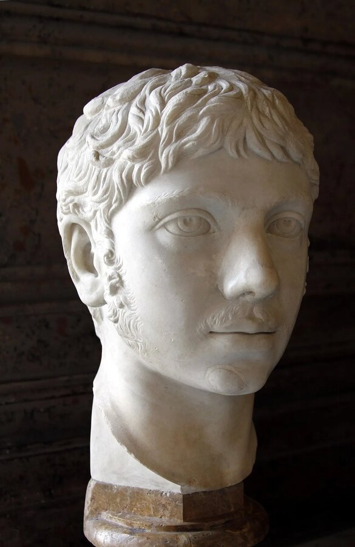
In today's social context, it is by far the most interesting Roman ruler. Of Syrian origins, this person reigned for nearly three years, from 218 to 222 CE, the year of their assassination at the age of 18, and is considered by many historians the first documented trans person in history.
The writings about their figure in classical historical literature are nothing short of atrocious. Aside from Nero, Caligula, and Commodus, she is often considered one of the vilest leaders of the glorified Roman Empire (Not Augustus or Trajanus, killing hundreds of thousands is a clear thumbs up as long as you don't make your horse a consul).
The reasons behind this judgment are far removed from the usual criteria — military disasters, economic recessions, or tyranny are rarely mentioned. In fact, their criticisms reflect an ancient echo of many reviews we find today on sites like Worth it or woke.
Wore makeup, shaved her legs, used wigs, had male lovers, enjoyed being addressed as “lady” instead of “lord,” invested large amounts of money in medics to perform gender-affirming surgery, adopted the name of an ancient Syrian deity and syncretized it with Roman culture, created a women's senate to serve her as personal advisors, and last but not least, allegedly murdered a bunch of her guests at a party by dropping tons of rose petals on them until they choked to death.
These are some of the reasons why, on June 26, 223, she and her mother Julia Soaemias were murdered by members of the Praetorian Guard.
“He tried to flee and might have hidden himself somewhere, but he was discovered and killed at the age of eighteen. His mother, who clung to him tightly, died with him. Their heads were cut off, and their naked bodies were dragged through the streets of the city. The body of his mother was discarded somewhere, while his was thrown into the river.”
— Cassius Dio. (1927). Roman History (E. Cary, Trans., Book 80, Fr. 20). Harvard University Press.
After reflecting on this person and the unfair treatment they have received from history, I decided to pay tribute to their figure in my series of folkloric and mythological drawings.
For inspiration, I took her most famous anecdote, considered a story that historians spread shortly after their death to cement their image as the embodiment of moral decline. Yet, in this work by Lawrence Alma-Tadema, I perceive very little of that decay.
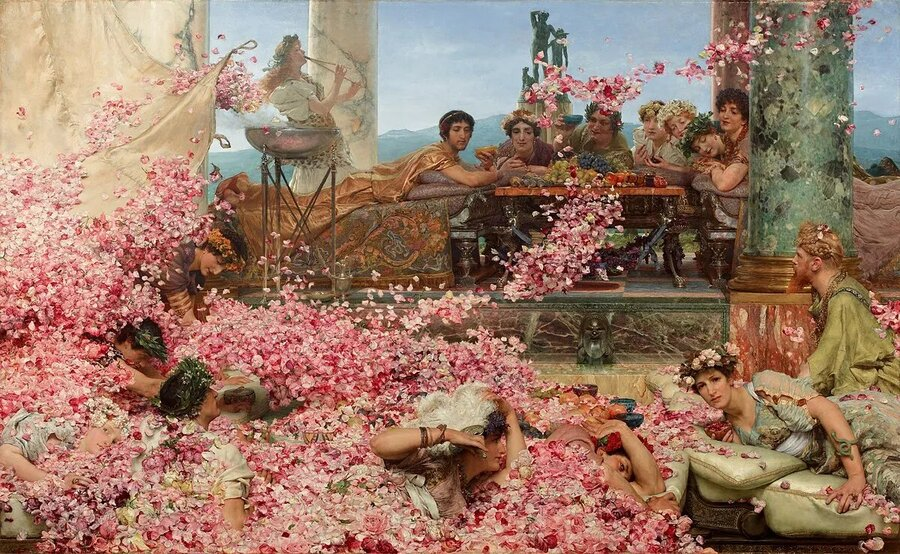
I really like many of the pictoric moments this work offers, however, reading about the empress's final moments, the treatment she's received from historians, that crappy review site full of rubes, and losing my bike keys after those four (or was it 5?) damned beers, led me down a very different, and much more pessimistic path.
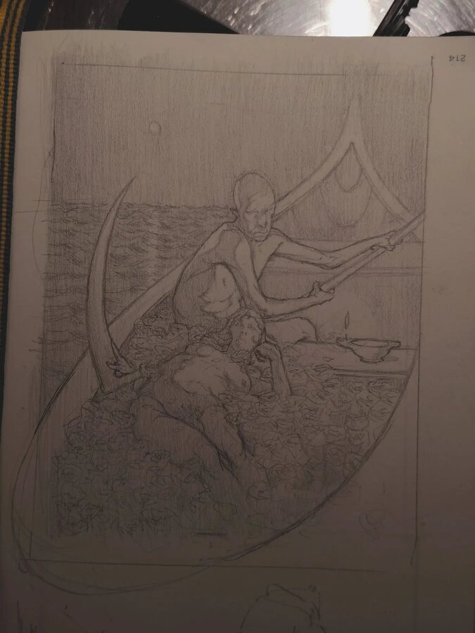
A boat, in the middle of the Stygian lagoon. No land in sight. The water is restless, but there is no current…
…a difficult case for the judges of Hades, when deciding which of the three currents of the river should follow someone who spent their life swimming against the current itself.
Heliogabalus lies in the boat on a bed of rose petals.
The ferryman, her only company, glances at her sideways with a certain air of sorrow. He doesn't know where to take her, he doesn't understand her sins either.
Once death is transcended, her body metamorphoses into everything she sought to become in life.
Life — her life. Death — her (written by:) story.
To rewrite the canonical history, to blur her sexes, to let her ambiguities emerge through charcoal, to give her a new body.
The oar/scythe: a blade, a bias, a rule, a morality — whose only way forward is slicing things in two, or more.
She plays with it indifferently, resting her fingers on the edge without fear of cutting one.
In her other hand rests her head, with a gaze both inquisitorial and indifferent.
She looks at us, on the other side.
She knows that a thousand years later, we'll suture her wounds, paint on her eyeliner, celebrate her wigs.
Born far too late to do anything about it but just in time to draw something about it.
READ ON MEDIUM ↗I recently finished (almost) a zine about swimming pools, which I titled, quite aptly in my opinion, POOLS. It's a series of 13 or 15 drawings of scenes in swimming pools, and just as many pages with vague thoughts about, yes, you guessed it, pools. More specifically, moments I often experience with a certain kind of people that always evoke me very positive thoughts.
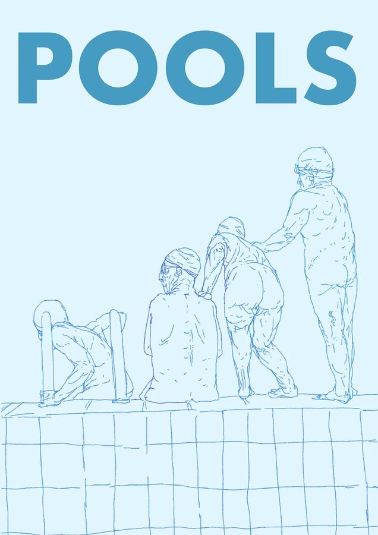
The stages are generic and don't exist in the real world, although some are inspired by the pools I frequent. The influence of the "liminal pools" aesthetic found in many internet forums is also evident — rooms entirely plagued with thousands of immaculate tiles, as sterile as they are they still convey a very distinct feeling of calmness that I find very pleasant.
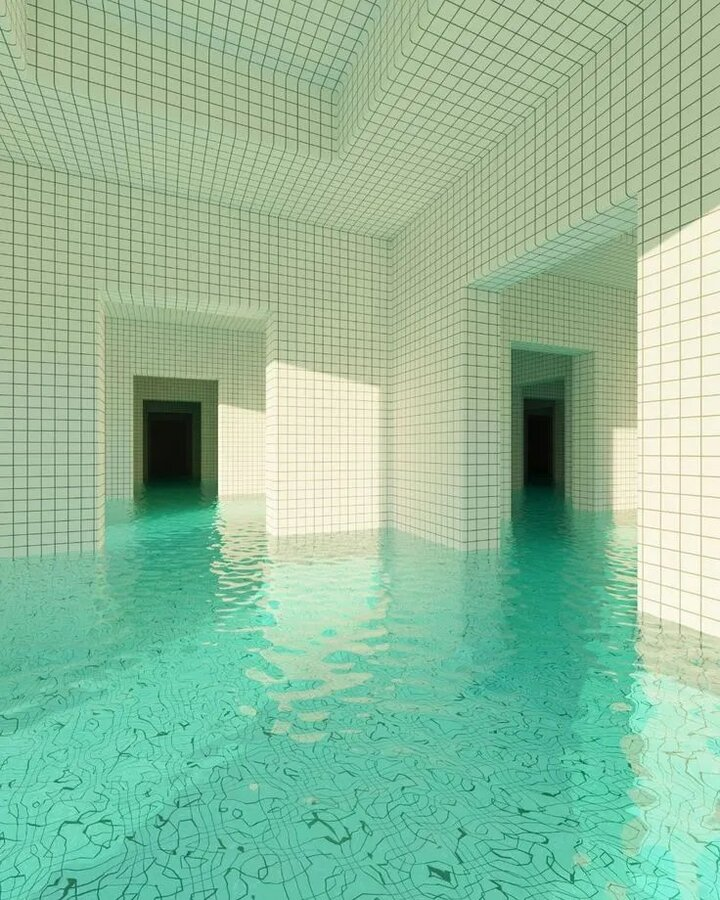
I usually go several times a week to the public pools and saunas in the city (Copenhagen), and I often try to memorize those bodies I find most interesting, to later desacralize them in one of my unscrupulous drawings.
Almost always, the bodies that leave the strongest imprint on my memory, the protagonists of these wee zine, are those of very old people (and I mean the very old, 85+). I observe them in silence and with a certain reverence, not with morbid curiosity or voyeurism, but with a cartographic interest in the map traced by the folds and wrinkles that weave through their wiry bodies and the memories they evoke in me when I try to unravel them.
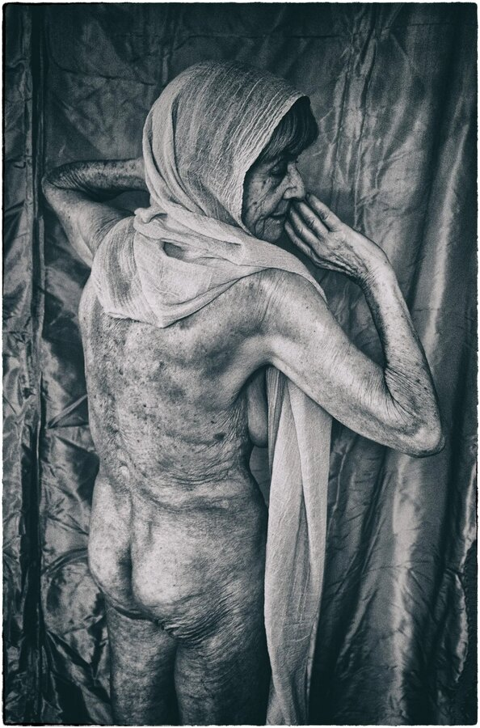
I always approach the drawings from the wrinkle, the pronounced joints of the bones (I rarely start them anywhere other than the knees), and the way the skin spills over the skeleton. It's like drawing a chair with clothes on, or a coat rack — there are no muscles or tendons holding the tissue to defy gravity, everything crumbles and precipitates towards the floor.
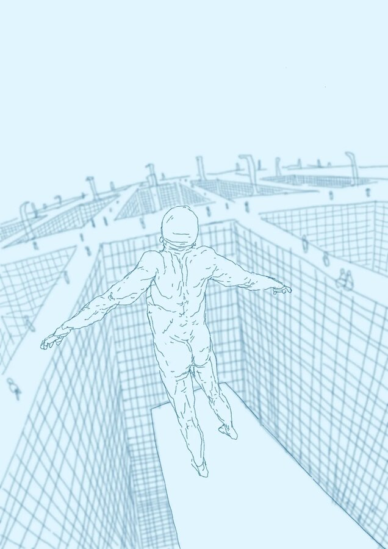
It's hard to see these kind of bodies in this way in the media, particularly women's (unless you are watching an ethnographic documentary). In films, television, or magazines, these type of bodies are disregarded most of the time, they don't produce "appetite," are unpleasant to the eye and unfit to be desired, old and good to go — replaced by younger versions, flawless, shiny, glossy, smooth as a polychromed virgin ready for a procession night and polished as any of the thousands of tiles that lay the bottom of the pool.
"The beauty of what is polished and smoothed, of what is soft and sleek, leaves no trace. It does not tell a story."
— Byung-Chul Han, Saving Beauty
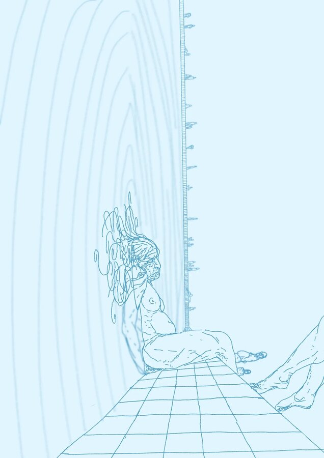
Hence the shock I often feel when seeing such worn bodies, fully and without censorship. The public modesty with which elderly people usually carry themselves in the shared spaces of big cities takes a hiatus in the peculiar collective intimacy produced by semi-nudity in public pools and saunas.
The shock is collective, the contrast in shape and rhythm between these people and the rest is evident for everyone — there is no one, in or out of the water, who doesn't eventually turn their head in the direction of these people.
Like someone spotting a deer among the trees of a forest from the car, or a shooting star when the skies are clear, it does feel without a question like a sight to gaze upon.
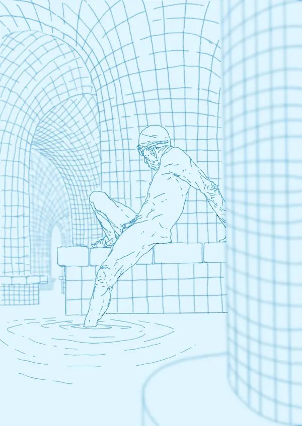
A few times I've witnessed adults who glance sideways and almost afraid at them like a Roman general at the slave whispering memento mori in his ear. Most adults look on more tenderly (perhaps remembering someone) while getting lost in the mazes that all the twists and whirls of skin create with every move.
There are small children who stop their chatter like a cow that stops grazing to watch a train pass — they don't know what they are looking at, but they do know that it is something that should be looked.
And there are babies, just now taking their first splashes, who fix their gaze without reverence or shame for as long as they see fit, which shouldn't be surprising, since they tend to do that with everyone all the time.
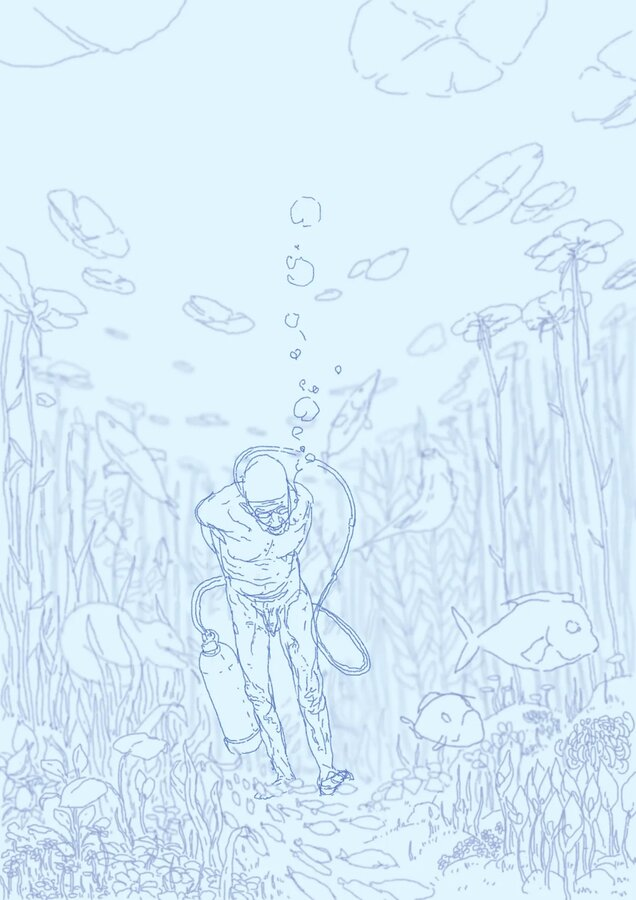
We watch them undress with difficulty in the changing rooms, how they soap their bodies, how they take their time going down the stairs, and how they peacefully swim breaststroke, as much as they can, as far as they get.
Then they get out, they dry off. If you look at them, they smile. If you don't look, they smile anyway. And then they leave. And we all stay, crawling vigorously through the lanes, nailing dives from the springboard, working on our summer bodies, blending in with the tiles.
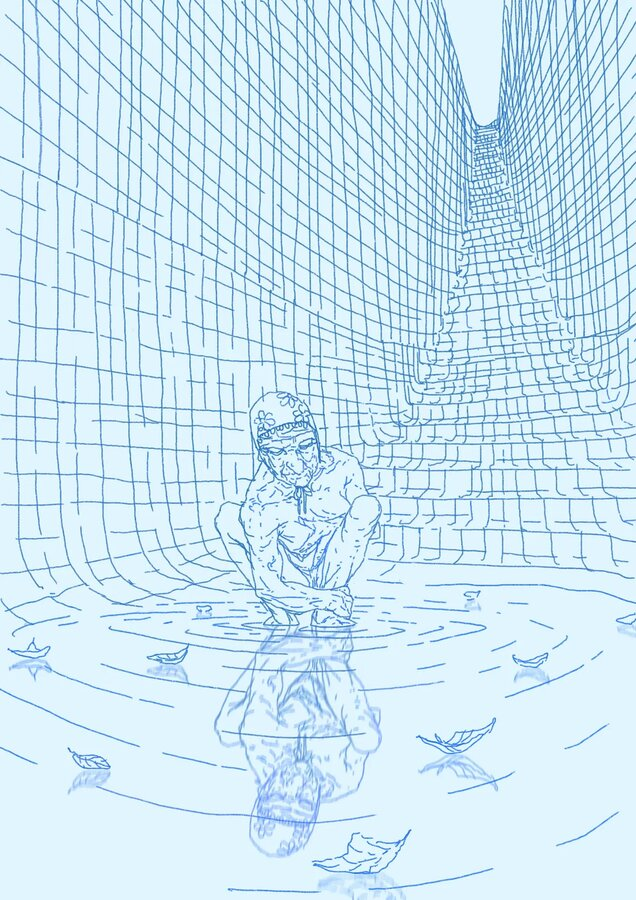